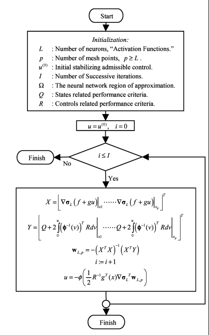
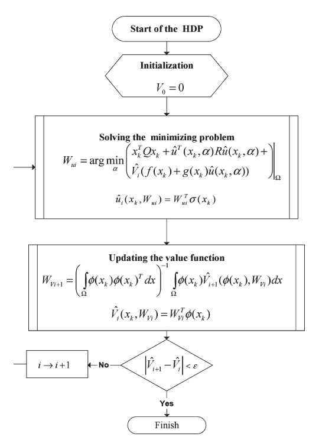
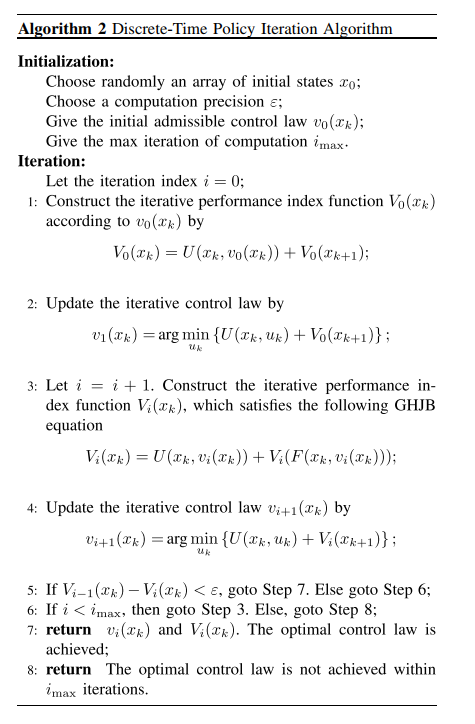

搞了很久的ADP（Adaptive dynamic programming），但是，仿真总是会出现一些问题，因为从我个人的理解来看，很多ADP文章其实都是局部且异步的PI或者VI算法。根据《Reinforcement Learning: An Introduction》书中所介绍的方法，PI和VI都是对于离散的状态空间来说的。如果对于具有连续的状态空间的问题来说，需要采用近似的算法来拟合其值函数。本文是对多篇ADP文章进行的总结和仿真。主要包括：
- 《Nearly optimal control laws for nonlinear systems with saturating actuators using a neural network HJB approach》2004年
- 《Discrete-Time Nonlinear HJB Solution Using Approximate Dynamic Programming: Convergence Proof》2008年
- 《Policy Iteration Adaptive Dynamic Programming Algorithm for Discrete-Time Nonlinear Systems》2014年
- 《Discrete-Time Local Value Iteration Adaptive Dynamic Programming: Convergence Analysis》2018年
主要算法：
文献[1]提出的算法：
这篇文章解决的是具有输入饱和问题的连续仿射非线性系统的最优控制问题，提出了一种迭代的策略来对AC网络进行更新：

文献2提出的算法：

文献3提出的算法：

文献4提出的算法：
对于非线性系统，提出了一种迭代的求解HJB方程的算法，考虑的是离散的系统的情形，提出的算法主要是解决传统的ADP的计算量的问题，通常来说，ADP算法需要对状态空间中所有的状态点来进行迭代计算，对于连续的状态空间来说，计算量非常庞大，这篇文章提出了一个数值仿真算例，对于一个简单的系统，如果使用全局值迭代算法进行更新，在每一轮的迭代过程中，需要22901.51秒来训练critic和actor网络，因此，计算量非常庞大，所以，这篇文章提出的是一个局部的ADP算法，所谓的局部更新的方法，我个人认为其实是Asynchronous Dynamic Programming方法，见《reinforcement Learning: An Introduction》第二版中第4.5节(Page 85)中所说的思想，就是随机初始化起始点，然后在进行迭代，但是迭代的过程中不是对状态空间中所有的状态点进行更新，而是选取一部分的点来进行更新，同时，能够证明出有收敛性的保证。
写这篇文章的目的
方法总结：现在很多的ADP文章在写的时候，感觉都有些不清不楚，尤其是基于PI算法和VI算法的ADP算法：
初始的状态点如何选取？
是选一个固定的初始点还是选取随机的状态空间内的初始点？
是选一个初始点还是选取多个初始点？
迭代是online还是offline？
仿真的结果有没有把training的过程放出来？
训练的过程需要多少时间？
是model-free还是model-based？
训练的过程中有没有用到-1/2的那个迭代的表达式？
种种问题，让我觉得ADP，整个领域都充满了问题，感觉都是在灌水啊。像是RL的简单应用，而且，ADP中研究的很多都是确定性系统，和RL相比，传统的MDP变成了确定性过程，也就是说状态转移概率\(P\)变成了确定性的\(1\)，因此，问题的复杂程度是不是降低了很多？
而且Reward的设计也很成问题，传统的RL的环境，例如Gym的很多classic control的环境，都是具有专业背景的在专业领域的人写的，不同的人写出来的环境对于训练的性能差别相差很大，问题主要在于action需要尽可能的归一化，包括reward也需要尽可能的限制在一定的范围内，同时，如果出现了稀疏的reward的情况，如何解决？这都是需要解决的问题。
今年5月份，大佬们发表了《Reward is enough》的文章，个人感觉就是控制中一直被研究的performance function，我还需要进一步深入研究才行。
仿真代码：
对于最优控制的迭代计算方法，采用文章[4]中对于线性系统的特殊的迭代更新方式，在这篇文章中，研究对象主要是仿射非线性系统，但是对于线性系统这样的特殊系统，也推导了特殊的更新方式。
\(u_i(x_k)=-(R+B^TP_iB)^{-1}B^TP_iAx_k\)
其中，\(P_i\)是值函数，这里使用的是神经网络进行拟合
1 | class Actor(torch.nn.Module): |
仿真的目的主要是：我这两个月在搞safe reinforcement learning方向的东西，把一个连续系统的算法进行改造，推广到离散系统中去，证明过程都没啥问题，但是仿真很成问题，主要是在于无法找到初始容许控制律。
考虑过很多办法：
- 系统是确定性系统，同时，我们知道系统的动态，也就是说，可以根据《Reinforcement Learning: An Introduction》书中的第（3.12）表达式，直接进行求解计算，当然，由于是连续系统，我们只能采用神经网络进行值函数的拟合，拟合的过程中也不能采用很大的batch size进行学习，不然内存和显存都不够了，因此，采用小的batch size，对状态空间中的点进行随机采样初始点，计算其值函数，通过这个方法构造出了状态和价值函数对，然后可以进行训练，最终将训练出来的网络参数进行保存即可。
- 初始容许控制策略的计算：对于线性系统，可以使用matlab中的求解LQR控制器的方法求出其最优的LQR控制器，然后，为了求出actor，利用这个LQR控制器构造训练数据，对actor进行训练，最后将训练出来的网络参数进行保存即可。
- 对于线性系统的特殊情形，利用此表达式\(u_i(x_k)=-(R+B^TP_iB)^{-1}B^TP_iAx_k\)，在没有actor网络和critic网络的情况下，也可以直接使得系统达到稳定状态，所以从这个结果看来，到底是这个表达式本身是否就是最优控制律？
完整的代码见Github:
仿真中的注意点：
- 在对代码重构的过程中，需要将系统环境模块分离开来，一开始写的时候是耦合在主程序中的，因为ADP的训练过程其实和RL的训练过程还是有些差别的。重构的过程中，遇到了一些问题，有：需要在step函数的最后，将next_state来赋值给类中的self.state变量，以此来更新类内部的状态。
- 查找了一下，发现当前还没有Pytorch实现的基于Actor-critic结构的ADP算法的实现，（从这里可以看出来控制专业和计算机的差距！连代码都不敢开源，是不是说明很多成果或算法都是假的呢？一开源就见光死了）。因此，才想着把自己实验的程序部分开源一下。
- 其实一开始做了很久的Projection的方法的Safe Reinforcement Learning算法的仿真，但是后来发现这个projection方向是一个坑啊！进行projection的过程中，会破坏迭代过程，也即破坏了HJB方程的最优性，求解出来的控制律无法保证或证明是最优的，这个稳定的控制律又有何区别？当时这个projection的方法主要是和MPC进行结合的，同时，也是需要系统模型的，是一种Model-Based算法。
进一步计划：
仿真仿射非线性系统，当然我研究的是Safe Learning，首先需要找一个仿真算例，也就是说不用我的方法进行迭代学习会超过系统的安全域（状态限制），用了我的方法会使得系统的状态永远被限制在安全域内。